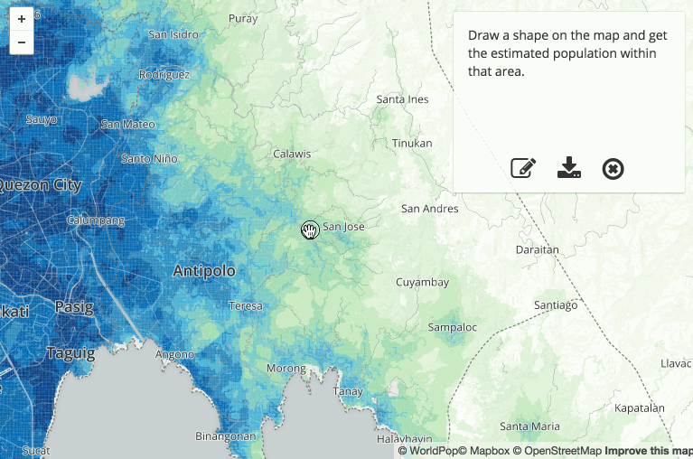
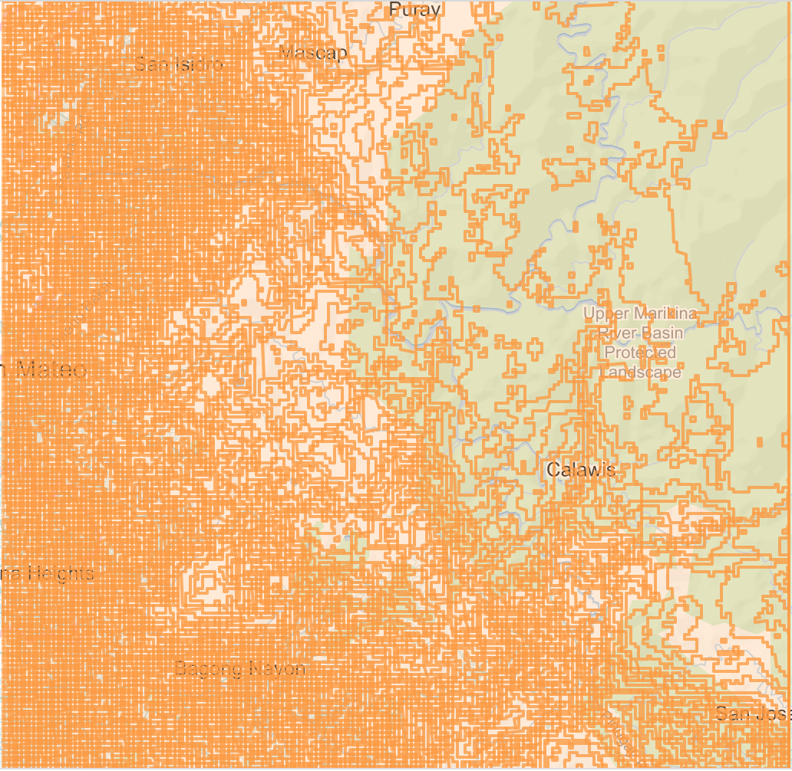
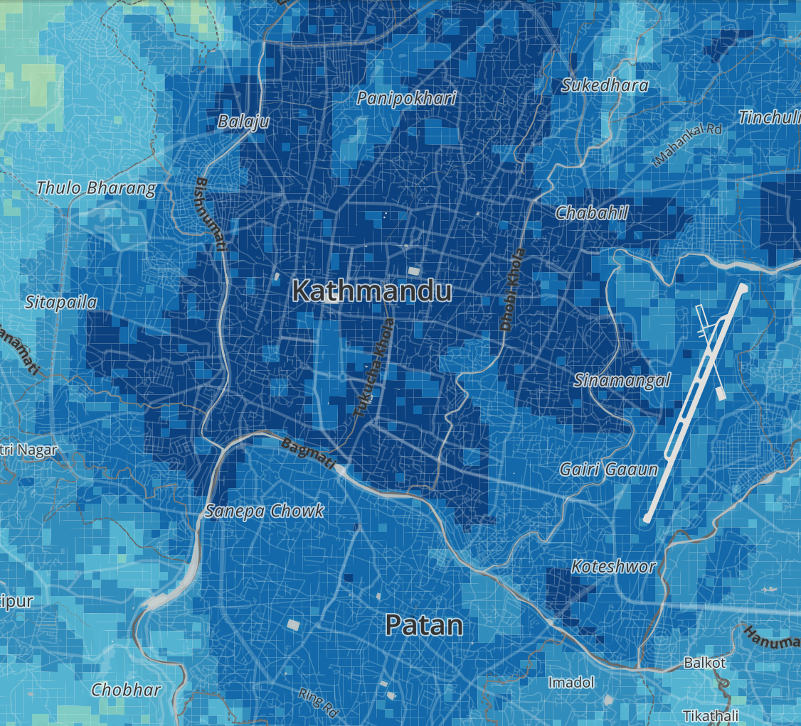

Data Analysis with Vector Tiles
I give vector tiles and vector rendering another 1-2 years before it tips from weird research and supervised, commercial deployment into wide use and hacking.
Michal Migurski, State of the Map 2015
At State of the Map this year, there was an interesting panel about the
the current state of vector tile rendering. Mike Migurski was the moderator
of the panel, and this was his reaction in his summary blog post.
Now, that panel was mostly focused on vector tile *rendering*, but I'm going to talk
about something slightly different (but related), which is using vector
tiles for data analysis.
I'll talk about some problems and tentative solutions I've encountered while trying
to use vector tiles as a... vector... for data analysis, and them I'm hoping
have some time to hear if any of you have dealt with similar problems,
maybe in different ways.
Why?
- simplicity: render & analyze same data
- speed: parallel processing (TileReduce)
- interactivity: in-browser analysis (Turf)
So let me back up a sec. Why use vector tiles for data analysis?
1. If you're gonna analyze some geospatial data, there's a pretty good change you'll
also want to *see* it and *show* it. Vector tiles are great for the visualization side;
if you can use them for analysis too, that's a single data pipeline to
manage instead of two.
2. Tiled data is just *begging* to be processed in parallel. I haven't done much of this,
but Morgan Herlocker, who's also here, has done some pretty crazy huge computations this
way -- like comparing GPS traces to OSM roads, for example. And he's open sourced the
TileReduce library that he used to do it.
3. Third, and what I'll be focusing on, is the idea that vector tiles allow for some
interesting *interactive*, in-browser computations and analysis, particularly using Turf.
(Shoutout/thanks to mapbox for all the well crafted open source goodness)
But don't we already have GeoJSON?
GeoJSON's great, as long as it fits; vector tiles feel like the natural way to scale GeoJSON.
Like image tiles, they let you chop up your data into chunks so you only have to request
the region you're interested in. Since vector tiles carry the actual data, that's pretty
much equivalent to doing something like bounding box queries against a PostGIS backend...
With the added advantage that they play nicely with CDNs, they're arguably
easier to host.

This is a clip from a little tool we've been working on. The Worldpop
project uses a bunch of different methods to model population density and
some demographics at 100m resolution. Using that data, this tool is meant
to let a user draw a region of interest and get an estimate of its
population (and, eventually, stuff like gender, age, and socioeconomic
distribution).
I'll talk in terms of this project, but I'm really just thinking of it as
of it as sort of a case study. I'm really most interested in whether and
how the issues it's raised might generalize.
var totalPopulation = 0
vtGeojson(tileUrl, {
bounds: myPoly,
layers: ['population'],
minZoom: 11, maxZoom: 11
})
.on('data', function (feature) {
var relevant = turf.intersect(feature, myPoly)
var area = turf.area(relevant)
var density = feature.properties.pop_density
totalPopulation += density * area
})
.on('end', function () {
displayResult(totalPopulation)
})
I'm sure that's not super legible. Just want you to see that it's not
all that much code. Real quick, here's what it's doing...
vtGeojson(tileUrl, {
bounds: myPoly,
layers: ['population'],
minZoom: 11, maxZoom: 11
})
.on('data', function (feature) { ... })
vt-geojson takes the url to your vector tile endpoint (e.g., the Mapbox API url),
and some options (in this case, the polygon defining the region we want tiles for,
the layers to pull data from, and the zoom).
Under the hood, it uses a sweet little module called 'tile-cover' to
calculate which tiles cover the chosen area, and then it pulls them from
the endpoint and rehydrates them into GeoJSON.
What you get back is a simple object stream of the GeoJSON features in
those tiles, which you can use like this...
vtGeojson(tileUrl, { ... })
.on('data', function (feature) {
var relevant = turf.intersect(feature, myPoly)
var area = turf.area(relevant)
var density = feature.properties.pop_density
totalPopulation += density * area
})
The stream emits a data event for each feature, at which point you can
use Turf to do whatever Turfy things you want. Here, we needed to take the
intersection of each feature with the user's drawn polygon before we got its
area, because vt-geojson is grabbing features one whole TILE at a time.
... but there's a problem
So, this basically works, but we've got a problem.
The data we have is really fine-grained: that's the whole reason we
needed to tile it out instead of using GeoJSON in the first place.
This demo is at something like zoom 12 or 13, and you might have noticed
in the code that we set the min/max zoom to 11 in vt-geojson.


On the left, you can see the original polygon we drew, and the z11 tile that covers it.
Zoom out a bit to consider a larger region, and suddenly we're talking about dozens of
z11 tiles, each of which might be a couple hundred K. (The square on the right shows
the features in a single tile.)
Tiling the data is great, but if we need to request too many tiles, then we're back to
having way too much data to send over the network.

If we were just worried about rendering, we could just simplify or drop
features as we go to lower zoom levels, so that, say, z9 tiles wouldn't need to
each be 16 times the size of z11 tiles. This is what happens somewhat
when you upload shapes to Mapbox data, and it's what tippecanoe lets you do
with more control and tons of data.
But if we want to do quantitative stuff with the data, this may not work. In
our case, with population density data, the problem is that the tiny, population-dense
polygons in big cities are the first to go, and suddenly we've made quite a lot of
people disappear from our data.
Simplification is one way of compromising between accuracy and size, but it's
mostly oriented towards rendering. Here, we need some other way of making that
comporomise.
Aggregate on a grid
So, the approach we've been trying to solve this problem is, instead of
simplifying the feature data, *aggregating* it using a grid.
For example, if we have our original polygons at z13, then at z12 we make a
grid of square features--say 32x32 squares for each tile--and then for each
square, we calculate its properties by aggregating them from the features
in z13 that intersect with it. Then, for z11, we do the same thing, but now each
square at this level aggregates the data from the four squares that corresopnd
to it in z12. And so on.
Which specific aggregations that make sense depend on the application. In the
worldpop project, we used an area-weighted mean of the population density.
So, for each grid square, we take the features that it covers from the next
zoom level, multiply the density by the area, add them up, and then divide by
the total area.
I think the cool thing about the aggregated data is that it enables
something kinda like "scale-independent", interactive analysis. Here's an
example in action.
One nice thing here is that now, I can use a much more efficient tile
cover, with big tiles quickly filling the large interiors of the polygon
and smaller, more precise tiles for the outside.
On the other hand, doing that requires using vt-geojson, like I showed before.
But since this version is using Mapbox GL, we could also choose to simplify things:
GL is already downloading the vector tiles in order to render them in the browser,
and it's got methods that let us query the underlying feature data.
npm install -g vt-grid
vt-grid raw-data.mbtiles grid.mbtiles \
--gridsize 1024 \
--aggregations 'pop:areaWeightedMean(density)'
Getting this to work involved pulling together or writing a good number of
low-level pieces for manipulating vector tiles, and so, in the hopes of
making it a bit more reusable, I assembled them together into a little package
that that works from Node or the command line.
Other examples? What's next?
So in this example, I had polygons with density data. So far, we've
encountered one other example: we built an imagery browser for
OpenAerialMap, and we used a sort of heat map to show how many footprints
are available in a certain area.
Are there other classes of problems where this sort of approach, or a
variation of it, might be useful?